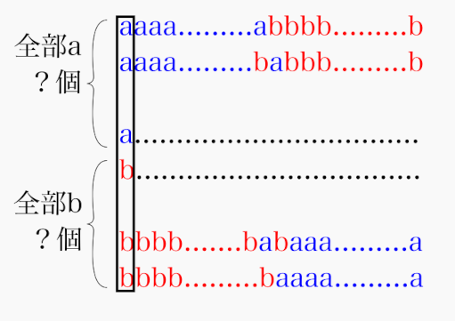
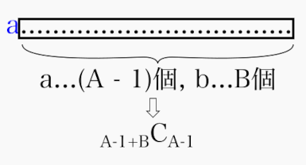
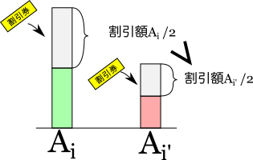

<!DOCTYPE HTML>
<html lang="ja" class="sidebar-visible no-js light">
    <head>
        <!-- Book generated using mdBook -->
        <meta charset="UTF-8">
        <title>緑コーダーが書く！ABCまとめ</title>
        
        <meta name="robots" content="noindex" />
        

        <meta content="text/html; charset=utf-8" http-equiv="Content-Type">
        <meta name="description" content="">
        <meta name="viewport" content="width=device-width, initial-scale=1">
        <meta name="theme-color" content="#ffffff" />

        <link rel="shortcut icon" href="favicon.png">
        <link rel="stylesheet" href="css/variables.css">
        <link rel="stylesheet" href="css/general.css">
        <link rel="stylesheet" href="css/chrome.css">
        <link rel="stylesheet" href="css/print.css" media="print">

        <!-- Fonts -->
        <link rel="stylesheet" href="FontAwesome/css/font-awesome.css">
        <link href="https://fonts.googleapis.com/css?family=Open+Sans:300italic,400italic,600italic,700italic,800italic,400,300,600,700,800" rel="stylesheet" type="text/css">
        <link href="https://fonts.googleapis.com/css?family=Source+Code+Pro:500" rel="stylesheet" type="text/css">

        <!-- Highlight.js Stylesheets -->
        <link rel="stylesheet" href="highlight.css">
        <link rel="stylesheet" href="tomorrow-night.css">
        <link rel="stylesheet" href="ayu-highlight.css">

        <!-- Custom theme stylesheets -->
        

        
        <!-- MathJax -->
        <script async type="text/javascript" src="https://cdnjs.cloudflare.com/ajax/libs/mathjax/2.7.1/MathJax.js?config=TeX-AMS-MML_HTMLorMML"></script>
        
    </head>
    <body>
        <!-- Provide site root to javascript -->
        <script type="text/javascript">
            var path_to_root = "";
            var default_theme = window.matchMedia("(prefers-color-scheme: dark)").matches ? "light" : "light";
        </script>

        <!-- Work around some values being stored in localStorage wrapped in quotes -->
        <script type="text/javascript">
            try {
                var theme = localStorage.getItem('mdbook-theme');
                var sidebar = localStorage.getItem('mdbook-sidebar');

                if (theme.startsWith('"') && theme.endsWith('"')) {
                    localStorage.setItem('mdbook-theme', theme.slice(1, theme.length - 1));
                }

                if (sidebar.startsWith('"') && sidebar.endsWith('"')) {
                    localStorage.setItem('mdbook-sidebar', sidebar.slice(1, sidebar.length - 1));
                }
            } catch (e) { }
        </script>

        <!-- Set the theme before any content is loaded, prevents flash -->
        <script type="text/javascript">
            var theme;
            try { theme = localStorage.getItem('mdbook-theme'); } catch(e) { }
            if (theme === null || theme === undefined) { theme = default_theme; }
            var html = document.querySelector('html');
            html.classList.remove('no-js')
            html.classList.remove('light')
            html.classList.add(theme);
            html.classList.add('js');
        </script>

        <!-- Hide / unhide sidebar before it is displayed -->
        <script type="text/javascript">
            var html = document.querySelector('html');
            var sidebar = 'hidden';
            if (document.body.clientWidth >= 1080) {
                try { sidebar = localStorage.getItem('mdbook-sidebar'); } catch(e) { }
                sidebar = sidebar || 'visible';
            }
            html.classList.remove('sidebar-visible');
            html.classList.add("sidebar-" + sidebar);
        </script>

        <nav id="sidebar" class="sidebar" aria-label="Table of contents">
            <div class="sidebar-scrollbox">
                <ol class="chapter"><li class="chapter-item expanded affix "><a href="index.html">はじめに</a></li><li class="chapter-item expanded "><a href="brute_force/main.html"><strong aria-hidden="true">1.</strong> 全探索</a></li><li><ol class="section"><li class="chapter-item expanded "><a href="brute_force/example/abc201_c.html"><strong aria-hidden="true">1.1.</strong> ABC201_C</a></li><li class="chapter-item expanded "><a href="brute_force/bit-brute_force/main.html"><strong aria-hidden="true">1.2.</strong> bit全探索</a></li><li><ol class="section"><li class="chapter-item expanded "><a href="brute_force/bit-brute_force/example/abc128_c.html"><strong aria-hidden="true">1.2.1.</strong> ABC128_C</a></li><li class="chapter-item expanded "><a href="brute_force/bit-brute_force/example/abc200_d.html"><strong aria-hidden="true">1.2.2.</strong> ABC200_D</a></li></ol></li><li class="chapter-item expanded "><a href="brute_force/combination-brute_force/main.html"><strong aria-hidden="true">1.3.</strong> 組合せ全探索</a></li></ol></li><li class="chapter-item expanded "><a href="binary_search/main.html"><strong aria-hidden="true">2.</strong> 2分探索</a></li><li class="chapter-item expanded "><a href="greedy/main.html"><strong aria-hidden="true">3.</strong> 貪欲法</a></li><li class="chapter-item expanded "><a href="dp/main.html"><strong aria-hidden="true">4.</strong> 動的計画法</a></li><li><ol class="section"><li class="chapter-item expanded "><a href="dp/example/abc129_c.html"><strong aria-hidden="true">4.1.</strong> ABC129_C</a></li></ol></li><li class="chapter-item expanded "><a href="enumerate/main.html"><strong aria-hidden="true">5.</strong> 数え上げ</a></li><li><ol class="section"><li class="chapter-item expanded "><a href="enumerate/example/abc202_d.html"><strong aria-hidden="true">5.1.</strong> ABC202_D</a></li></ol></li><li class="chapter-item expanded "><a href="linkedlist/main.html"><strong aria-hidden="true">6.</strong> 連結リスト</a></li><li><ol class="section"><li class="chapter-item expanded "><a href="linkedlist/example/triumph.html"><strong aria-hidden="true">6.1.</strong> Triumph(自作問題)</a></li></ol></li><li class="chapter-item expanded "><a href="graph/main.html"><strong aria-hidden="true">7.</strong> グラフ</a></li><li><ol class="section"><li class="chapter-item expanded "><a href="graph/tree/main.html"><strong aria-hidden="true">7.1.</strong> 木</a></li><li class="chapter-item expanded "><a href="graph/dijkstra/main.html"><strong aria-hidden="true">7.2.</strong> ダイクストラ法</a></li></ol></li><li class="chapter-item expanded "><a href="priorityqueue/main.html"><strong aria-hidden="true">8.</strong> プライオリティキュー</a></li><li><ol class="section"><li class="chapter-item expanded "><a href="priorityqueue/example/abc141_d.html"><strong aria-hidden="true">8.1.</strong> ABC141_D</a></li></ol></li><li class="chapter-item expanded "><a href="other/main.html"><strong aria-hidden="true">9.</strong> その他（未分類）</a></li><li><ol class="section"><li class="chapter-item expanded "><a href="other/example/abc134_d.html"><strong aria-hidden="true">9.1.</strong> 調和級数</a></li></ol></li></ol>
            </div>
            <div id="sidebar-resize-handle" class="sidebar-resize-handle"></div>
        </nav>

        <div id="page-wrapper" class="page-wrapper">

            <div class="page">
                
                <div id="menu-bar-hover-placeholder"></div>
                <div id="menu-bar" class="menu-bar sticky bordered">
                    <div class="left-buttons">
                        <button id="sidebar-toggle" class="icon-button" type="button" title="Toggle Table of Contents" aria-label="Toggle Table of Contents" aria-controls="sidebar">
                            <i class="fa fa-bars"></i>
                        </button>
                        <button id="theme-toggle" class="icon-button" type="button" title="Change theme" aria-label="Change theme" aria-haspopup="true" aria-expanded="false" aria-controls="theme-list">
                            <i class="fa fa-paint-brush"></i>
                        </button>
                        <ul id="theme-list" class="theme-popup" aria-label="Themes" role="menu">
                            <li role="none"><button role="menuitem" class="theme" id="light">Light (default)</button></li>
                            <li role="none"><button role="menuitem" class="theme" id="rust">Rust</button></li>
                            <li role="none"><button role="menuitem" class="theme" id="coal">Coal</button></li>
                            <li role="none"><button role="menuitem" class="theme" id="navy">Navy</button></li>
                            <li role="none"><button role="menuitem" class="theme" id="ayu">Ayu</button></li>
                        </ul>
                        
                    </div>

                    <h1 class="menu-title">緑コーダーが書く！ABCまとめ</h1>

                    <div class="right-buttons">
                        <a href="print.html" title="Print this book" aria-label="Print this book">
                            <i id="print-button" class="fa fa-print"></i>
                        </a>
                        
                    </div>
                </div>

                

                <!-- Apply ARIA attributes after the sidebar and the sidebar toggle button are added to the DOM -->
                <script type="text/javascript">
                    document.getElementById('sidebar-toggle').setAttribute('aria-expanded', sidebar === 'visible');
                    document.getElementById('sidebar').setAttribute('aria-hidden', sidebar !== 'visible');
                    Array.from(document.querySelectorAll('#sidebar a')).forEach(function(link) {
                        link.setAttribute('tabIndex', sidebar === 'visible' ? 0 : -1);
                    });
                </script>

                <div id="content" class="content">
                    <main>
                        <h1><a class="header" href="#はじめに" id="はじめに">はじめに</a></h1>
<p>このドキュメントは，AtCoder Beginner Contest（以下ABC）で好成績を収めるために，過去のABCで出題された問題の種類や解法をまとめたものです．（執筆中）</p>
<h2><a class="header" href="#想定する読者" id="想定する読者">想定する読者</a></h2>
<p>Pythonを用いたプログラミングに慣れている方を読者として想定しており，Python言語自体の仕様や，基本的な文法にはあまり触れません．
また，筆者自身も緑コーダーであり未熟であるため，このドキュメントで青diff以上の問題に触れることはほとんどありません．</p>
<h2><a class="header" href="#フィードバック" id="フィードバック">フィードバック</a></h2>
<p>もし誤植や，内容に誤りを発見した場合は，是非<a href="https://twitter.com/takesyhi_rs">Twitter</a>などでフィードバックしていただけると幸いです．</p>
<h1><a class="header" href="#全探索" id="全探索">全探索</a></h1>
<p>あり得るパターンを全て列挙/探索していくことで答えを導き出す方法を，全探索という．一見難しく見える問題も実は全探索で解けることがある．</p>
<p>ぱっと見て解き方がわからないときは，全探索をまず疑ってみよう．全探索での計算量を見積もって，与えられた制約，実行時間制限下で間に合うかをチェックしてみよう．</p>
<h1><a class="header" href="#abc201-c---secret-number" id="abc201-c---secret-number">ABC201 C - Secret Number</a></h1>
<p><a href="https://atcoder.jp/contests/abc201/tasks/abc201_c">https://atcoder.jp/contests/abc201/tasks/abc201_c</a></p>
<p>実行時間制限: 2 sec / メモリ制限: 1024 MB</p>
<h2><a class="header" href="#問題文" id="問題文">問題文</a></h2>
<p>高橋くんは，暗証番号を忘れてしまった．暗証番号は\(0 \)から\(9 \)までの数字のみからなる4桁の文字列で，\(0 \)から始まる場合もある．
\(0 \)から\(9 \)までの各数字について，高橋くんは以下のように記憶している．彼の記憶は長さ\(10 \)の文字列\(S_0S_1...S_9 \)によって表される．</p>
<ul>
<li>\(S_i \)が<code>o</code>のとき: 数字\(i \)は暗証番号に確実に含まれていた．</li>
<li>\(S_i \)が<code>x</code>のとき: 数字\(i \)は暗証番号に確実に含まれていなかった．</li>
<li>\(S_i \)が<code>?</code>のとき: 数字\(i \)は暗証番号に確実に含まれているか分からない．</li>
</ul>
<p>高橋君が忘れてしまった暗証番号としてあり得るものは何通りあるか答えよ．</p>
<h2><a class="header" href="#制約" id="制約">制約</a></h2>
<ul>
<li>\(S \)は<code>o</code>，<code>x</code>，<code>?</code>のみからなる長さ\(10 \)の文字列</li>
</ul>
<h2><a class="header" href="#解法" id="解法">解法</a></h2>
<p>この問題は，一見入り組んだ数え上げ問題に見える．そこで，全探索を検討してみる．</p>
<p>暗証番号が何通りあるかに注目する．問題文より，暗証番号は4桁なので，暗証番号は\(0000 \) 〜\(9999 \)の\(10000 \)通り．それぞれの暗証番号が入力で与えられた条件を満たしているかをチェックするのにかかる計算量は\(O(|S|) \)なので，\(N=10000 \)とすると，全探索による解法の計算量は\(O(N|S|) \)となることがわかる．</p>
<p>これは十分に高速である．</p>
<h2><a class="header" href="#実装" id="実装">実装</a></h2>
<pre><code class="language-py">s = input()

ans = 0
for i in range(10000):
  secret = str(i).zfill(4)
  for j in range(10):
    if s[j] == 'o' and (str(j) not in secret):
      break
    if s[j] == 'x' and (str(j) in secret):
      break
  else:
    ans += 1

print(ans)
</code></pre>
<h1><a class="header" href="#bit全探索" id="bit全探索">bit全探索</a></h1>
<p>全探索の種類の1つとして，bit全探索がある．bit全探索は，ある区別可能なものの集合について，それぞれ含めるか含めないか，より汎用的な言い方をするなら，真か偽かの組合せの全列挙を行うための手法である．</p>
<p>\(N \)桁の2進数において，各ビットは\(1 \)か\(0 \)であり，\(0 \)〜\(2^{N}-1 \)の2進数表記において，当然同じ\(0 \)/\(1 \)の組合せは存在せず，全てユニークな組合せであると同時に，全ての組合せを網羅している．これを利用し，それをそのまま\(N \)個の真/偽の組合せとして使うのがbit全探索である．</p>
<p>簡単なビット演算が必要になるため，最初はコードを書きづらいかもしれないが，何回か書くうちに徐々になれていく．</p>
<h1><a class="header" href="#abc128-c---switches" id="abc128-c---switches">ABC128 C - Switches</a></h1>
<p><a href="https://atcoder.jp/contests/abc128/tasks/abc128_c">https://atcoder.jp/contests/abc128/tasks/abc128_c</a></p>
<p>実行時間制限: 2 sec / メモリ制限: 1024 MB</p>
<h2><a class="header" href="#問題文-1" id="問題文-1">問題文</a></h2>
<p>onとoffの状態を持つ\(N \)個のスイッチと，\(M \)個の電球がある．スイッチには\(1 \)から\( N\)の，電球には\(1 \)から\(M \)の番号がついている．</p>
<p>電球\( i\)は\(k_i \)個のスイッチに繋がっていて，スイッチ\(s_{i1},s_{i2},...,s_{ik_i} \)のうちonになっているスイッチの個数を\(2 \)で割った余りが\(p_i \)に等しい時に点灯する．</p>
<p>全ての電球が点灯するようなスイッチのon/offの状態の組み合わせは何通りあるか答えよ．</p>
<h2><a class="header" href="#制約-1" id="制約-1">制約</a></h2>
<ul>
<li>\(1 \leq N, M \leq 10 \)</li>
<li>\(1 \leq k_i \leq N \)</li>
<li>\(1 \leq s_{ij} \leq N \)</li>
<li>\(s_{ia} \neq s_{ib} (a \neq b) \)</li>
<li>\(p_i \)は\(0 \)または\(1 \)</li>
<li>入力は全て整数である</li>
</ul>
<h2><a class="header" href="#解法-1" id="解法-1">解法</a></h2>
<p>難しい数え上げ問題に見えるので，全探索を検討してみる．</p>
<p>スイッチの個数は最大でも\(10 \)個なので，スイッチのon/offの組合せは最大で\(2^{10}=1024 \)通りである．この組み合わせの列挙は，bit全探索により実装することができる．</p>
<p>あるスイッチの組合せが，\(M \)個全ての電球それぞれの点灯する条件を満たしているかにかかる計算量は，\(O(MN) \)．よって，全体の計算量は\(O(2^NMN) \)となる．</p>
<p>これは十分に高速である．</p>
<h2><a class="header" href="#実装-1" id="実装-1">実装</a></h2>
<pre><code class="language-py">n, m = map(int, input().split())
com = [[*map(int, input().split())][1:] for _ in range(m)]
p = [*map(int, input().split())]

ans = 0
for bits in range(1&lt;&lt;n):
  ison = lambda sw: (bits&gt;&gt;(sw-1))&amp;1
  ans += all(
    (sum(map(ison, com[i]))%2 == p[i]) for i in range(m)
  )
print(ans)
</code></pre>
<h1><a class="header" href="#abc200-d---happy-birthday-2" id="abc200-d---happy-birthday-2">ABC200 D - Happy Birthday! 2</a></h1>
<p><a href="https://atcoder.jp/contests/abc200/tasks/abc200_d">https://atcoder.jp/contests/abc200/tasks/abc200_d</a></p>
<p>実行時間制限: 2 sec / メモリ制限: 1024 MB</p>
<h2><a class="header" href="#問題文-2" id="問題文-2">問題文</a></h2>
<p>\(N \)個の正整数からなる数列\(A=(A_1,A_2,...,A_N) \)が与えられる．以下の条件を全て満たす2つの数列\(B=(B_1,B_2,...,B_x) \)，\(C=(C_1,C_2,...,C_y) \)が存在するか判定し，存在する場合はひとつ出力せよ．</p>
<ul>
<li>\( 1 \leq x,y \leq N \)</li>
<li>\( 1 \leq B_1 &lt; B_2 &lt; ... &lt; B_x \leq N \)</li>
<li>\( 1 \leq C_1 &lt; C_2 &lt; ... &lt; C_y \leq N \)</li>
<li>\(B \)と\(C \)は，異なる数列である．
<ul>
<li>\(x \neq y \)のとき，または，ある整数\(1 \leq i \leq \mathrm{min}(x,y) \)が存在して\(B_i \neq C_i \)であるとき，\(B \)と\(C \)は異なるものとする．</li>
</ul>
</li>
<li>\(A_{B_1}+A_{B_2}+...+A_{B_x} \)を\(200 \)で割った余りと\(A_{C_1}+A_{C_2}+...+A_{C_y} \)を\(200 \)で割った余りが等しい．</li>
</ul>
<h2><a class="header" href="#制約-2" id="制約-2">制約</a></h2>
<ul>
<li>入力は全て整数</li>
<li>\(2 \leq N \leq 200 \)</li>
<li>\(1 \leq A_i \leq {10}^9 \)</li>
</ul>
<h2><a class="header" href="#解法-2" id="解法-2">解法</a></h2>
<p>問題文をよりわかりやすく言い換える．</p>
<p>数列\(A \)の任意長の部分列の集合の中に，総和を\(200 \)で割った余りが等しくなるものが存在するか，存在する場合はその2つの部分列を出力せよ．</p>
<p>各\(A_i (1 \leq i \leq N)\)を含めるか含めないかの組合せを全探索すれば答えを得られるので，単純なbit全探索の問題に見える．</p>
<p>bit全探索の計算量を確かめてみよう．\(2 \leq N \leq 200 \)なので，組合せの総数は最大で\(2^{200}&gt;{10}^{50} \)通りである．したがって，計算量は\(O(2^N N) \)となり，この解法の実行時間は制限を大きく上回ることがわかる．そのため，より深い考察が必要である．</p>
<p>今求めたいのは，それぞれの組合せにおける，総和を\(200 \)で割った余りに，重複があるかないかである．\(200 \)で割った余りは\(0 \)~\(199 \)の\(200 \)通りであるため，組合せを\(201 \)通り調べた時点で，必ず1つ以上の重複が生じることがわかる．</p>
<p>つまり，組合せの総数は最大\(2^{200}-1&gt;{10}^{50} \)通りだが，最初の\(201 \)通りで必ず答えが見つかる．そのため，実は，上記アルゴリズムの計算量は見つかった時点でプログラムを終了すれば\(O(201) \)であり，十分高速なのである．</p>
<p>他の解法として，上の考察から，そもそも数列\(A \)の長さは\(8 \)あれば組合せ数が\(2^8-1=255 \)となり\(201 \)を超えているため，そもそも最初から数列\(A \)の長さが\(\mathrm{min}(N,8) \)であるという前提でプログラムを書いても正解となる．この場合は，全探索のループを最後まで行っても計算量は\(O(255) \)であり，十分高速である．</p>
<h2><a class="header" href="#実装-2" id="実装-2">実装</a></h2>
<pre><code class="language-py">n = int(input())
a = [*map(int, input().split())]

mod = [[] for _ in range(200)]
for bits in range(1, 1&lt;&lt;n):
  combi = [i+1 for i in range(n) if (bits&gt;&gt;i)&amp;1]
  m = sum([a[i-1] for i in combi])%200
  mod[m].append(combi)
  if len(mod[m]) &gt; 1:
    print('Yes')
    [print(len(e), *e) for e in mod[m]]
    exit()

print('No')
</code></pre>
<h1><a class="header" href="#組合せ全探索" id="組合せ全探索">組合せ全探索</a></h1>
<p>全探索の一種として，組合せ全探索がある．区別可能なものの集合の中から，ある数だけ選ぶ組合せを全て列挙することで条件を満たす組合せを導き出す手法おである．</p>
<p>pythonの場合は，<code>itertools</code>モジュールの中に<code>collections</code>というメソッドが用意されているので，実装ではただそれを用いれば良い．</p>
<h2><a class="header" href="#例" id="例">例</a></h2>
<p>以下は，\(1 \)，\(2 \)，\(3 \)，\(4 \)の4つから3つを選ぶ組合せを列挙しリスト化するコード．</p>
<pre><code class="language-py">&gt;&gt;&gt; import itertools
&gt;&gt;&gt; list(itertools.combinations(range(1, 5), 3))
[(1, 2, 3), (1, 2, 4), (1, 3, 4), (2, 3, 4)]
</code></pre>
<h1><a class="header" href="#2分探索" id="2分探索">2分探索</a></h1>
<h1><a class="header" href="#貪欲法" id="貪欲法">貪欲法</a></h1>
<h1><a class="header" href="#動的計画法" id="動的計画法">動的計画法</a></h1>
<p>部分構造最適性，部分問題重複性の性質を持つ問題は，動的計画法（以下DP）によってより高速に解ける可能性がある．</p>
<p>部分構造最適性とは，問題の最適解が部分問題の最適化を含んでいること．部分問題重複性とは，同じ部分問題が繰り返し出現すること．</p>
<p>問題の構造が帰納的，再帰的になっていることを利用して，部分問題の解を，それを包含するより大きな問題を解くのに使用する．これにより，同じ計算を複数回行うことを避け，計算量を落とす．</p>
<h1><a class="header" href="#abc129-c---typical-stairs" id="abc129-c---typical-stairs">ABC129 C - Typical Stairs</a></h1>
<p><a href="https://atcoder.jp/contests/abc129/tasks/abc129_c">https://atcoder.jp/contests/abc129/tasks/abc129_c</a></p>
<p>実行時間制限: 2 sec / メモリ制限: 1024 MB</p>
<h2><a class="header" href="#問題" id="問題">問題</a></h2>
<p>\(N \)段の階段がある．高橋君は現在，上り口（\(0 \)段目）にいる．高橋君は一歩で\(1 \)段か\( 2\)段上ることができる．</p>
<p>ただし，\(a_1,a_2,a_3,...a_m \)段目の床は壊れており，その段に足を踏み入れることは危険．</p>
<p>壊れている床を踏まないようにしながら，最上段（\(N \)段目）にたどり着くまでの移動方法は何通りあるか．総数を\(1000000007 \)で割った余りを求めよ．</p>
<h2><a class="header" href="#制約-3" id="制約-3">制約</a></h2>
<ul>
<li>\(1 \leq N \leq {10}^{5} \)</li>
<li>\(0 \leq M \leq N-1 \)</li>
<li>\(1 \leq a_1 &lt; a_2 &lt; ... &lt; a_m \leq N-1 \)</li>
</ul>
<h2><a class="header" href="#解法-3" id="解法-3">解法</a></h2>
<p>細かいことを抜きにして考えると，\(N \)段目にたどり着く総数は\(N-1 \)段目にたどり着く総数と\(N-2 \)段目にたどり着く総数の和である．また，これは，\(N-1 \)段目（\(N-2 \)段目）についても同様のことが成立し，\(N-1 \)段目（\(N-2 \)段目）にたどり着く総数は\(N-2 \)段目（\(N-3 \)段目）にたどり着く総数と\(N-3 \)段目（\(N-4 \)段目）にたどり着く総数の和である．</p>
<p>したがって，この問題において，\(i （2 \leq i \leq N）\)段目にたどり着く総数\(S_i \)は，以下の漸化式で表される．</p>
<p>\[
\begin{align}
S_0 &amp;= S_1 = 1 \\
S_i &amp;= S_{i-1} + S_{i-2}
\end{align}
\]</p>
<p>ここから，あとは壊れた床に注意して，以下のようなコードが思いつく人も少なくないだろう．</p>
<pre><code class="language-py">import sys
sys.setrecursionlimit(10**6)
mod = 1000000007

n, m = map(int, input().split())
a = set([int(input()) for _ in range(m)])

def rec(i):
  if i == 0:
    return 1
  elif i &lt; 0:
    return 0
  return ((i in a)^1)*(rec(i-1)+rec(i-2))%mod

print(rec(n))
</code></pre>
<p>単純な再帰関数による実装である．しかし，このプログラムの計算量は\(O(2^N) \)であり（2分木を思い浮かべるとわかる），この解法の実行時間は制限を大きく上回ってしまう．</p>
<p>ここで，動的計画法が適用できる問題の性質を思い出して欲しい．上記の漸化式から，この問題が部分構造最適性を満たしているのは明白である．上の漸化式から，下のような式が成り立っていることがわかる．</p>
<p>\[
\begin{align}
S_i \\
&amp;= S_{i-1} + S_{i-2} \\
&amp;= S_{i-2} + S_{i-3} + S_{i-3} + S_{i-4} \\
&amp;= S_{i-3} + S_{i-4} + S_{i-4} + S_{i-5}+S_{i-4} + S_{i-5} + S_{i-5} + S_{i-6} \\
&amp;= ... + S_0 + S_0
\end{align}
\]</p>
<p>つまり，部分問題が入れ子（木構造）のようになっているため，各部分問題を解いていく度に同じ部分問題を解くことになるのである．よって，部分問題重複性も満たしているので，この問題はDPで解くことができる．</p>
<p>DPのポイントは，部分問題の計算結果を残すことで，同じ計算を2度行うことを避けるということ．DPの実装方法は，大きく分けてメモ化再帰とボトムアップ方式の2つがある．メモ化再帰は，先ほどの再帰関数において，1度行った計算結果を内部で保持しておくことで，同じ引数で再度その関数が呼ばれたとき，前回の計算結果をそのまま返すという方法．ボトムアップ方式は，\(S_0 \)から順番に\(S_1 \)，\(S_2 \)と求めていくことで，単純なループで解を求める方法．どちらの方法も，各\(S_i \)はそれぞれ1度しか計算しないため，計算量は\(O(N) \)であり，これは実行時間制限に対して，十分高速である．</p>
<h2><a class="header" href="#実装-3" id="実装-3">実装</a></h2>
<p>メモ化再帰</p>
<pre><code class="language-py">import sys
sys.setrecursionlimit(10**6)
mod = 1000000007

n, m = map(int, input().split())
a = set([int(input()) for _ in range(m)])

memo = [1]+[None]*(n-1)+[0]
def rec(i):
  if i != n and memo[i] is not None:
    return memo[i]
  memo[i] = ((i in a)^1)*(rec(i-1)+rec(i-2))%mod
  return memo[i]

print(rec(n))
</code></pre>
<p>DP</p>
<pre><code class="language-py">mod = 1000000007
n, m = map(int, input().split())
a = set([int(input()) for _ in range(m)])

dp = [1]+[0]*n
for i in range(1, n+1):
  dp[i] = ((i in a)^1)*(dp[i] + dp[i-1] + dp[i-2])%mod

print(dp[n])
</code></pre>
<h1><a class="header" href="#abc202-d---aab-aba-baa" id="abc202-d---aab-aba-baa">ABC202 D - aab aba baa</a></h1>
<p><a href="https://atcoder.jp/contests/abc202/tasks/abc202_d">https://atcoder.jp/contests/abc202/tasks/abc202_d</a></p>
<p>実行時間制限: 2 sec / メモリ制限: 1024 MB</p>
<h2><a class="header" href="#問題-1" id="問題-1">問題</a></h2>
<p>　
\(A\)個の\(a\)と\(B\)個の\(b\)からなる長さ\(A+B\)
の文字列のうち、辞書順で \(K\)番目のものを求めてください。</p>
<h2><a class="header" href="#制約-4" id="制約-4">制約</a></h2>
<ul>
<li>\(1 \leq A, B \leq 30 \)</li>
<li>\(A\)個の\(a\)と\(B\)個の\(b\)からなる長さ\(A+B\)の文字列の総数を\(S\)個と置いた時、\(1 \leq K \leq S\)</li>
<li>入力は全て整数である。</li>
</ul>
<h2><a class="header" href="#解法-4" id="解法-4">解法</a></h2>
<p>問題をイメージしてみると、辞書順に並べるということは以下のように並べることである。<br></p>
<div align="center"></div>
<p>ここで先頭の文字に注目すると最初は<font color="blue">\(a\)</font>が続き、途中で<font color="Red">\(b\)</font>になってからは最後まで<font color="blue">\(a\)</font>に戻ることがないのがわかる。</p>
<div align="center"></div>
ではこの、<b>１文字目がaの文字列</b>は何個続くのだろうか。<br>
<p>ここで2文字目以降に注目する。２文字目以降の文字数は当然一つ減るので\(A-1+B\)個(内訳は\(a\)が\(A-1\)個、\(b\)が\(B\)個)である。これが色々並んでいるわけだが、並び順はわからずとも実はいくつ並んでいるかは<b>組み合わせの数(Combination)</b>で分かる。どういうことかというと紙を\(A-1+B\)枚並べて、そのうちの\(A-1\)枚に\(a\)を書く書き方は何通りあるか　を計算するのと同じなのである。\(b\)は自動的に\(a\)が書かれなかった場所に書かれるため<b>\(a\) を書く紙を選んだ後\(b\)を書く場所を考える必要はない。</b><br>この計算は<b>コンビネーション(Combination)</b>と呼ばれており</p>
<p>\[
{}_{n} {C} _{m} = \frac{(m)!}{(n)!(m-n)!}
\]</p>
<p>と表記・計算される。これを今回の場合に当てはめると<br></p>
<p>\[
{}_{A-1+B} {C} _{A-1} = \frac{(A-1+B)!}{(A-1)!(B)!}
\]</p>
<p>となる。</p>
<div align="center"></div>
<p>ところで、この問題は\(K\)番目の文字の並べ方を探すものであった。\({}_{A-1+B} {C} _{A-1}\)は先頭1文字目が \(a\) のものを並べた総数であるため、（２文字目以降はわからないが）少なくとも</p>
<blockquote>
<p>\({}_{A-1+B} {C} _{A-1} &gt; K\)であれば、最初の\(1\)文字目は<font color="Red">\(b\)</font>、そうでなければ<font color="blue">\(a\)</font></p>
</blockquote>
<p>ということが分かる。これで最初の1文字目が決定した。では2文字目以降はというと、実は同じように考えれば良くて</p>
<ul>
<li>\(A-1\)個の\(a\)と\(B\)個の\(b\)からなる長さ\(A-1+B\) の文字列のうち、辞書順で \(K\)番目のものを求めてください。<b>(1文字目が\(a\)の時)</b></li>
<li>\(A\)個の\(a\)と\(B-1\)個の\(b\)からなる長さ\(A+B-1\) の文字列のうち、辞書順で \(K - {}_{A-1+B} {C} _{A-1}\)番目のものを求めてください。<b>(1文字目が\(b\)の時)</b></li>
</ul>
<p>という、この問題そのものを解くのと同じことになり、これを繰り返せば再起的に問題が解けそうである。徐々に文字が \(a\) と確定することによって \(K\) が減っていき、最終的に \(K = 0\) となった瞬間に全ての文字が決まる、という考え方である。
<br>
ところで、この組み合わせの数 (Combination)は以下のような特徴的な関係がある。</p>
<blockquote>
<p>\(  {}_n {C} _{m} = _{n-1} {C} _{m-1} + _{n-1} {C} _m\)</p>
</blockquote>
<p>また、\( {}_n {C} _1 = n\) であるため、この二つを使えば動的計画法で高速に\({}_n {C}_m\)が計算可能である。
以下は\(1-MMAX\)(この場合100)の間の\(n\)において\({}_n {C} _{m}\)を計算するコードである。
<br>一度計算してしまえばあとは
\({}_n {C}_m \) は \(dp[n][m]\)を呼び出すだけで良い。</p>
<pre><code class="language-py">dp = list()
MMAX = 100 # Maximum number of parameter
for n in range(MMAX):
    tmp = [1] * (MMAX)
    dp.append(tmp)

#combination of nC1 = n
for n in range(1, MMAX):
    d[n][1] = n

#Filling numbers with dp
for n in range(1,MMAX):
    for m in range(1,MMAX):
        if m &lt; n:
            dp[n][m] = dp[n-1][m-1] + dp[n-1][m]
        elif n == m:
            dp[n][m] = 1
</code></pre>
<p>今回の問題の場合、\(1 \leq A + B \leq 60\)であるため、上記のコードで全パターン計算してから上に書いた左端の文字から決定していくプロセスを進めて行っても十分間に合う。最終的な解法はこのようになる。</p>
<pre><code class="language-py">A, B, K = map(int,input().split())

#DP part (culclate all combinations, nCm =&gt; dp[n][m] 
dp = list()
MMAX = 61
for n in range(MMAX):
    tmp = [1] * (MMAX)
    dp.append(tmp)

#combination of nC1 = n
for n in range(1, MMAX):
    d[n][1] = n

#Filling numbers with dp
for n in range(1,MMAX):
    for m in range(1,MMAX):
        if m &lt; n:
            dp[n][m] = dp[n-1][m-1] + dp[n-1][m]
        elif n == m:
            dp[n][m] = 1

#Problem solving part
ret = ''
#remaining number of character'a' and 'b'
a,b = A, B
while True:
    # The first character is b if all the 
    # combinations of a,b, letters from 2nd to last is 
    # larger than K 
    if K &gt; dp[a - 1 + b][b]:
        ret = ret + 'b'
        K -= dp[a - 1 + b][b]
        b -= 1
        if K == 0:
            break
    else:
        ret = ret + 'a'
        a -= 1
    if a == 0 or b == 0:
        if a == 0:
            ret += 'b' * b
        else:
            ret += 'a' * a
        break        

print(ret)
</code></pre>
<h1><a class="header" href="#連結リスト" id="連結リスト">連結リスト</a></h1>
<p>一連のノードが，任意のデータフィールド群と，1つか2つの参照（リンク）を持つ．参照は，次（および前）のノードを指している．つまり，連結リストは自己参照型のデータ型であり，同じデータ型の別のノードへのリンク（またはポインタ）を含んでいる．</p>
<p>連結リストの利点は，リスト上のノードを様々な順番で検索可能な点である．場所（ポインタ）が分かっていれば，ノードの挿入や削除を\(O(1) \)で行うことができる．</p>
<p>一方，添字（インデックス）によるアクセスには，\(O(N) \)かかる．</p>
<p>連結リストには，片方向リスト，双方向リスト，線形リスト，循環リストなどがある．</p>
<p>片方向リストの実装は以下．</p>
<pre><code class="language-py">class Node:
  def __init__(self, value):
    self.value = value
    self.next = None
 
class LinkedList:
  def __init__(self):
    self.head = None
 
  def insert(self, index, value):
    node = Node(value)
    if index == 0:
      node.next = self.head
      self.head = node
      return
    left = self.head
    right = left.next
    for _ in range(index-1):
      left = right
      right = right.next
    
    node.next = right
    left.next = node
 
  def delete(self, index):
    if index == 0:
      self.head = self.head.next
      return
    left = self.head
    right = left.next
    for _ in range(index-1):
      left = right
      right = right.next
    
    left.next = right.next
 
  def __iter__(self):
    self._next = self.head
    return self

  def __next__(self):
    ret = self._next
    if ret is None:
      raise StopIteration()
    self._next = self._next.next
    return ret.value

# example
# ll = LinkedList()
# for i in range(10):
#   ll.insert(i, i+1)
# print(*[*ll])
</code></pre>
<h1><a class="header" href="#triumph" id="triumph">Triumph</a></h1>
<p>連結リストの問題が見つからなかったので作問した．</p>
<p><a href="https://mojacoder.app/users/Coordinator/problems/triumph">https://mojacoder.app/users/Coordinator/problems/triumph</a></p>
<p>実行時間制限: 2 sec / メモリ制限: 1024 MB</p>
<h2><a class="header" href="#問題-2" id="問題-2">問題</a></h2>
<p>スペード，クローバー，ダイヤ，ハートのカードがそれぞれ\(N \)枚ずつあり，それぞれのマークについて，\(1 \)~\(N \)の番号のカードが1枚ずつある．例えば，スペードの\(1 \)，クローバーの\(1 \)，ダイヤの\(1 \)，ハートの\(1 \)はそれぞれ\(S1 \)，\(C1 \)，\(D1 \)，\(H1 \)で表され，最初，カードは，\(S1,...,SN,C1,...CN,D1,...,DN,H1,...,HN \)の順番で並んでいる．
これに対して，\(Q \)個のクエリに従ってシャッフルを行う．具体的には，\(i (1 \leq i \leq Q) \)番目のクエリでは次の操作をしなければならない．</p>
<ul>
<li>\(L_i,R_i \)が与えられる．カード\(L_i \)からカード\(R_i \)までの全てのカードを順番を保ったまま先頭に持っていく．つまり，カードの順列\([a_1,a_2,...,a_{4N}] \)において\(L_i=a_j,R_i=a_k (1 \leq j \leq k \leq 4N) \) であるとき，順列\([a_1,…,a_{j-1},a_j,…,a_k,a_{k+1}...,a_{4N}] \)を\([a_j,…,a_k,a_1,…,a_{j−1},a_{k+1},...a_{4N}] \)に変更する．</li>
</ul>
<p>\(Q \)個のクエリを順に処理した後のカードの順列において，全てのスペードのカードのみからなる部分列，全てのクローバーのカードのみからなる部分列，全てのダイヤのカードのみからなる部分列，全てのハートのカードのみからなる部分列をそれぞれこの順で出力せよ．</p>
<p>部分列とは，ある順列から任意数の項を抜き出した上で，&quot;順番を保ったまま&quot;それらを並べてできる順列のことである．</p>
<h2><a class="header" href="#制約-5" id="制約-5">制約</a></h2>
<ul>
<li>\(1 \leq N \leq {10}^5 \)</li>
<li>\(1 \leq Q \leq {10}^5 \)</li>
</ul>
<h2><a class="header" href="#入力" id="入力">入力</a></h2>
<p>\(N\ Q \)</p>
<p>\(L_i\ R_i(1 \leq i \leq Q) \)はそれぞれ&quot;S&quot;または&quot;C&quot;または&quot;D&quot;または&quot;H&quot;の1文字と，数字\(j (1 \leq j \leq N) \)を並べてできる\(4N \)種類の文字列</p>
<h2><a class="header" href="#出力" id="出力">出力</a></h2>
<p>スペードのカードのみからなる部分列，クローバーのカードのみからなる部分列，ダイヤのカードのみからなる部分列，ハートのカードのみからなる部分列をそれぞれこの順で4行で出力せよ．</p>
<h2><a class="header" href="#サンプル" id="サンプル">サンプル</a></h2>
<h3><a class="header" href="#入力例1" id="入力例1">入力例1</a></h3>
<pre><code>1 2
C1 D1
D1 S1

</code></pre>
<h3><a class="header" href="#出力例1" id="出力例1">出力例1</a></h3>
<pre><code>S1
C1
D1
H1

</code></pre>
<p>初期状態は，\([S1, C1, D1, H1] \)．
1つ目のクエリにより，\(C1 \)~\(D1 \)が先頭に行くので，\([C1, D1, S1, H1] \)になる．
2つ目のクエリにより，\(D1 \)~\(S1 \)が先頭に行くので，\([D1, S1, C1, H1] \)になる．
\(N=1 \)の場合，どのように並び替えてもそれぞれ1枚ずつしかないので，出力結果は自明です．</p>
<h3><a class="header" href="#入力例2" id="入力例2">入力例2</a></h3>
<pre><code>3 2
C2 D1
S3 H3

</code></pre>
<h3><a class="header" href="#出力例2" id="出力例2">出力例2</a></h3>
<pre><code>S3 S1 S2
C1 C2 C3
D2 D3 D1
H1 H2 H3

</code></pre>
<p>初期状態は，\([S1, S2, S3, C1, C2, C3, D1, D2, D3, H1, H2, H3] \)．
1つ目のクエリにより，\(C2 \)~\(D1 \)が先頭に行くので，\([C2, C3, D1, S1, S2, S3, C1, D2, D3, H1, H2, H3] \)になる．
2つ目のクエリにより，\(S3 \)~\(H3 \)が先頭に行くので，\([S3, C1, D2, D3, H1, H2, H3, C2, C3, D1, S1, S2] \)になる．
それぞれのマークのみからなる部分列は，スペードが\([S3,S1,S2] \)，クローバーが\([C1,C2,C3] \)，ダイヤが\([D2,D3,D1] \)，ハートが\([H1,H2,H3] \)となる．</p>
<h3><a class="header" href="#入力例3" id="入力例3">入力例3</a></h3>
<pre><code>2 1
C2 C2

</code></pre>
<h3><a class="header" href="#出力例3" id="出力例3">出力例3</a></h3>
<pre><code>S1 S2
C2 C1
D1 D2
H1 H2

</code></pre>
<p>\(L_i \)と\(R_i \)が等しい場合もあります．その場合は，その1枚を先頭に持っていきます．</p>
<h2><a class="header" href="#解法-5" id="解法-5">解法</a></h2>
<h2><a class="header" href="#実装-4" id="実装-4">実装</a></h2>
<pre><code class="language-py">class Node:
  def __init__(self, value):
    self.value = value
    self.left = None
    self.right = None

def card2number(n, card):
  if card[0] == 'S':
    return int(card[1:])-1
  elif card[0] == 'C':
    return n + int(card[1:])-1
  elif card[0] == 'D':
    return 2*n + int(card[1:])-1
  elif card[0] == 'H':
    return 3*n + int(card[1:])-1
  else:
    raise Exception

n, q = map(int, input().split())

head = Node(0)
nodes = [head]
for i in range(1, 4*n):
  node = Node(i)
  nodes[-1].right = node
  node.left = nodes[-1]
  nodes.append(node)

for _ in range(q):
  l, r = map(lambda arg: card2number(n, arg), input().split())
  if nodes[l].left is None:
    continue
  nodes[l].left.right = nodes[r].right
  if nodes[r].right is not None:
    nodes[r].right.left = nodes[l].left
  head.left = nodes[r]
  nodes[r].right = head
  head = nodes[l]
  nodes[l].left = None
  tmp = head

cards = [[], [], [], []]
for _ in range(4*n):
  cards[head.value//n].append(head.value%n+1)
  head = head.right
for i in range(4):
  print(*[f'{&quot;SCDH&quot;[i]}{card}' for card in cards[i]])
</code></pre>
<h1><a class="header" href="#グラフ" id="グラフ">グラフ</a></h1>
<h1><a class="header" href="#木" id="木">木</a></h1>
<h1><a class="header" href="#ダイクストラ法" id="ダイクストラ法">ダイクストラ法</a></h1>
<h1><a class="header" href="#プライオリティキュー" id="プライオリティキュー">プライオリティキュー</a></h1>
<p>次の2つの操作が行えるデータ構造を，プライオリティキューといいます．</p>
<ul>
<li>値の追加</li>
<li>最小の値の取り出し</li>
</ul>
<p>プライオリティキューは，ヒープ(木)と呼ばれるデータ構造を用いて実装されます．ヒープは，親の数字よりも子の数字が大きくなっている2分木です．2つの操作の計算量は，どちらも\(O(\log n)\)です．</p>
<p>ある値の集合から，最小値(最大値)を何度も取り出す状況を考えてみてください．集合に対して，途中で値の追加がなければ，最初にソートし，そこから1番後ろの値を順番に取り出すことで実現できます．しかし，この方法の場合，取り出しにかかるコストは\(O(1)\)ですが，途中で値が追加される場合は，ソートを崩さないように値を挿入する必要があり，挿入する場所を求めるのに2分探索を使って\(O(\log n)\)，挿入に\(O(n)\)かかってしまいます．</p>
<p>そこで，プライオリティキューを使うことで，最小値(最大値)の取り出し，値の追加をともに\(O(\log n)\)と高速に行うことができます．</p>
<p>Pythonでは，<a href="https://docs.python.org/3/library/heapq.html">heapq</a>
というライブラリを使ってListをプライオリティキュー化することが可能です．最小値の取り出しや値の追加を行う関数も用意されています．</p>
<pre><code class="language-py"># L : List(Lはリスト)
# Convert L from List to Priority Queue(Lをプライオリティキューに変更)
import heapq # Use heapq library(heapqライブラリを使用)
L = [1, 2, 3, 4, 5]
heapq.heapify(L)

# heappop: pop out the minimum number and return it 
# 最小値を見つけてそれをプライオリティキューから取り出し，その値を返す
print(heapq.heappop(L)) # 1
print(L) # [2, 4, 3, 5]

# 注意: ヒープをListを使って表現しているだけなので，Listの中身はソートされているわけではない

# heappush: add item (新たに値を加える．ここでは100を加えている) 
heapq.heappush(L, 100)
</code></pre>
<h1><a class="header" href="#abc201-d---powerful-discount-tickets" id="abc201-d---powerful-discount-tickets">ABC201 D - Powerful Discount Tickets</a></h1>
<p><a href="https://atcoder.jp/contests/abc141/tasks/abc141_d">https://atcoder.jp/contests/abc141/tasks/abc141_d</a></p>
<p>実行時間制限: 2 sec / メモリ制限: 1024 MB</p>
<h2><a class="header" href="#問題文-3" id="問題文-3">問題文</a></h2>
<p>高橋くんは\(N\)個の品物を\(1\)個ずつ順番に買う予定です。</p>
<p>\(i\)番目に買う品物の値段は \(A_i\)円です。高橋くんは \(M\) の割引券を持っています。</p>
<p>品物を買う際に割引券を好きな枚数使うことができます。
\(X\)円の品物を買う際に\(Y\)枚の割引券を使った場合、その品物を\(\frac{X}{2^Y}\)
円(小数点以下切り捨て)で買うことができます。</p>
<p>最小で何円あれば全ての品物を買うことができるでしょうか。</p>
<h2><a class="header" href="#制約-6" id="制約-6">制約</a></h2>
<ul>
<li>入力は全て整数である</li>
<li>\(1\leq N, M \leq  10 ^ 5 \)</li>
<li>\(1\leq A_i \leq  10 ^ 9 \)</li>
</ul>
<h1><a class="header" href="#解法-6" id="解法-6">解法</a></h1>
<p>割引券を\(1\)枚使った場合をまず考える。この時、以下のように高額な品物に割引券を使った方が支払うお金を抑えられることがわかる。</p>
<div align="center"></div>
<p>であれば、なるべく高価な品物に割引券を使えば割引額が大きくなり（=支払う金額が減り）、最終的な支払額を抑えられそうである。となると、商品を高額な順に並べて考えると良さそうである。</p>
<div align="center"></div>
では品物の高い順に一枚ずつ商品券を使えばいいかというと、<font color="red"><b>そうではない場合もある。</b></font>以下のような極端なケースがそれに当たる。すなわち、もっとも高額な商品に割引券を使ってもまだその商品がもっとも高額だった時である。
<div align="center"></div>
では、もっとも高額な商品がその次に高額な商品よりもいくら高い時に何回商品券を使うか、場合分けしていけば良いのか。これは色々なケースがあって骨が折れそうである。しかし、以下のように考えればその商品に何枚の商品券を使うかは<b>そもそも考えなくて良い</b>ことがわかる。
<ol>
<li>その時にもっとも高額な商品に商品券を使い、価格を半分にする。</li>
<li>その商品の価格を半分にした後に、再び全ての商品の中で一番高いものを探す。</li>
<li>1、2を商品券がなくなるまで（すなわち\(M\)回）繰り返す。</li>
<li>最後に残った（割引済）商品の価格の和を求める。</li>
</ol>
<p>次に実際の実装について。上記を実現するに当たって、商品の価格を，常にソートされた配列で持つ場合、以下の2つの操作を毎回行う必要がある。</p>
<ul>
<li>最も高い商品を見つける</li>
<li>その商品の値の変更（もっとも高い商品を半額にすること）</li>
</ul>
<p>商品の値を変更する際、ソートが崩れないようにするには、少なくとも\(O(MN)\)の計算量が必要である。
これは制限時間に間に合わない。</p>
<p>そこで<font color="red"><b>プライオリティキュー</b></font>を使う。プライオリティキューでは、要素の追加、取り出しの計算量が\(O(\log N)\)であるため、これを用いた場合、全体の計算量は\(O(M \log N)\)となって間に合う。</p>
<p>Pythonには<a href="https://docs.python.org/3/library/heapq.html">heapq</a>
というライブラリがあるので、それを使えば特に複雑な実装をすることなく普通の配列をプライオリティキュー化可能である。</p>
<p>ところが最大値を見つけて取り出す関数はない（heapq.nlargestの計算量は\(O(n)\)以上\(O(n \log n)\)以下であり計算量が大きい上にプライオリティキューからの取り出しはできない）。
しかし、今回のように最大値を取り出したい場合は<b>元の配列の要素を全て\(-1\)倍した配列をプライオリティキュー化すれば、その最小値を取り出すことは元の数列の最大値（の\(-1\)倍）の値が取り出せる</b>ことを利用する。そして最後に残った配列の要素を再び\(-1\)倍して元に戻せば良い。
この手法で、本問題を解いてみる。</p>
<h2><a class="header" href="#実装-5" id="実装-5">実装</a></h2>
<pre><code class="language-py">N, M = map(int,input().split())
A = list(map(int,input().split()))

# multiply -1 to all the elements (全てのAの要素に-1をかける)
A = [-a for a in A]

# p: number of used discount tickets (pは使用した割引券の数)
p = 0

# convert list to priority queue (Aをプライオリティキュー化)
import heapq
heapq.heapify(A)

# apply discount ticket to the most expensive product 
# until p reaches to M. 
# pがMになるまで、最高価格の商品に商品券を適用する。

while p &lt; M:
    tmp = heapq.heappop(A)

    # pop the most expensive(this case, the minimum number), 
    # divide by 2 (and add 1 if the original number is negative even)
    # then add to the priority queue  
    # もっとも高価な商品を取り出し（ただし負数にしているので最小値）２で割って割引した値段にし
    # (奇数の場合2で割ってから1を加える必要があることに注意)、元のプライオリティキューに加え直す

    tmp = tmp // 2 + int(tmp % 2 == 1)
    heapq.heappush(A, tmp)

    #consume one discount ticket(商品券を1枚消費する)
    p += 1
    if p == M:
        break

# culculate the sum of the last left priority queue and multiply -1
# 最後に残ったプライオリティキューの合計値を求めて、-1をかけて元に戻す
print(-sum(A))
</code></pre>
<p>#　その他
カテゴリー分類が未定のもの、特殊なものを格納します。</p>
<h1><a class="header" href="#調和級数harmonic-series-abc134-d-preparing-boxes" id="調和級数harmonic-series-abc134-d-preparing-boxes">調和級数(Harmonic Series) ABC134-D Preparing Boxes</a></h1>
<p><a href="https://atcoder.jp/contests/abc134/tasks/abc134_d">https://atcoder.jp/contests/abc134/tasks/abc134_d</a></p>
<p>実行時間制限: 2 sec / メモリ制限: 1024 MB</p>
<h2><a class="header" href="#問題-3" id="問題-3">問題</a></h2>
<p>\(N\)個の空の箱が横一列に並んでいます。 左から \(i(1≤i≤N)\)番目の箱には整数\(i\)が書かれています。<br>
すぬけさんは、それぞれの箱に対してボールを\(1\)個入れるか何も入れないかを選ぶことができます。<br>
ここで、以下の条件を満たすようなボールの入れ方を、いいボールの入れ方と定めます。</p>
<ul>
<li>\(1\)以上\(N\)以下の任意の整数\(i\)について、\(i\)の倍数が書かれた箱に入っているボールの個数の和を\(2\)で割った余りが\(a_i\)
である。</li>
</ul>
<p>いいボールの入れ方は存在するでしょうか。存在するならば \(1\)つ求めてください。</p>
<h2><a class="header" href="#制約-7" id="制約-7">制約</a></h2>
<ul>
<li>入力は全て整数である</li>
<li>\(1\leq N \leq 2 \times 10 ^ 5 \)</li>
<li>a_iは\(0\)または\(1\)である。</li>
</ul>
<h2><a class="header" href="#解法-7" id="解法-7">解法</a></h2>
<p>以下、\(k\)番目の箱にボールが入っているか否かを\(b_k\)で示す。（\(b_k = 1\)の時はボールが入っており、\(b_k=0\)の時は入っていない。）
<br>
普通に\(a_1\)から順に考えていくとどうなるか。例えば\(a_1\)が\(0\)だった時は</p>
<ul>
<li>全ての箱にボールなし</li>
<li>1番目の箱と2番目の箱にボールがあってあとは全部ボールなし</li>
<li>.....</li>
</ul>
<p>ここで、二つ目のようにボールが2個入っている場合、何番目を選ぶかで\( {}_N {C}_2 \) 通りあることに気づく。さらに次の\(a_2\)と辻褄合わせなければならない。それだけではない、\(a_3、a_4\)。。。とも辻褄合わせをする必要があり、キリがないことに気が付く。この方法は<font color="Red">非現実的</font>である。</p>
<p>他の方法を考えてみる。逆に \(N\) 番目から注目していく。\(a_N = 1\)だった時は次のケースが考えられる。</p>
<ul>
<li>\(N\)番目の箱にボールが入っている　(すなわち\(b_N=1\))</li>
</ul>
<p>実はこれだけである。\(N-1\)番以下の箱のことは考えなくて良い。なぜならば\(N-1\)番目以下は絶対に\(N\)の倍数ではないからである。
このように大きな数から計算していくと良さそうである。これで例えば\(k:1\leq k \leq N \)の時の\(b_k\)を決めるには</p>
<ul>
<li>\(k\)以上\(N\)以下の\(k\)の倍数の\(b\)を加える</li>
<li>上記の総和の\(2\)の倍数が\(a_k\)と一致していたら\(b_k=0\)、そうでなければ\(b_k=1\)(辻褄あわせ)</li>
</ul>
<p>やはりこれだけである。\(k-1\)以下の数については一切考慮しなくてよい。
このkのパターンを1まで考えていけばよい。
ところでこれは２重ループになりそうである。普通２重ループは計算量が\(O(n^2)\)であり、<b>制約</b>が \(1\leq N \leq 2 \times 10 ^ 5 \)だったので間に合わなさそうであるが、これは実は<font color="Red"><b>計算量が\(O(n^2)\)よりも小さく、間に合う</b></font>のである。</p>
<p>どういうことか。
先程の\(k\)の時の\(b_k\)を決める手順で倍数を加える回数は<font color="Red">\(k\)以上\(N\)以下の\(k\)の倍数</font>回であり、これは高々\(\frac{N}{k}\)回である。\(k\)は\(1\leq k \leq N \)であったので、このやり方での計算量は
\[
\frac{N}{1} + \frac{N}{2} + ... + \frac{N}{N} = N (\frac{1}{1} + \frac{1}{2} + ... + \frac{1}{N})
\]
であり、実は右辺の分数部分は高々\(logN\)である。（高校の数学で\( \int \frac{1}{x}dx = logx + C\)であったのを思い出すと、上の式は似ている。。）
なので、実は計算量は\(NlogN\)となり間に合う。
この分数部分の計算は<b><a href="https://ja.wikipedia.org/wiki/%E8%AA%BF%E5%92%8C%E7%B4%9A%E6%95%B0">調和級数</a></b>と呼ばれている。</p>
<h2><a class="header" href="#実装-6" id="実装-6">実装</a></h2>
<pre><code class="language-py">N = int(input())
B = list(map(int,input().split()))
A = [0]
# 問題文のiとA[i]を合わせるためA[0]を先頭に追加。Bも同様
A.extend(B)
ret = [0] * (N + 1)
for i in range(N,0,-1): #このループが計算量N
    tmp = ret[i]
    j = i
    while j &lt;= N:#この部分の計算量はlogN
        tmp += ret[j]
        j += i
    if tmp % 2 != A[i]:
        ret[i] = 1
count = sum(ret)
if count == 0:
    print(0)
    exit()
ret = ' '.join([str(i) for i in range(len(ret)) if ret[i] == 1])
print(count)
print(ret)
</code></pre>

                    </main>

                    <nav class="nav-wrapper" aria-label="Page navigation">
                        <!-- Mobile navigation buttons -->
                        

                        

                        <div style="clear: both"></div>
                    </nav>
                </div>
            </div>

            <nav class="nav-wide-wrapper" aria-label="Page navigation">
                

                
            </nav>

        </div>

        

        

        
        
        
        <script type="text/javascript">
            window.playpen_copyable = true;
        </script>
        

        

        

        <script src="clipboard.min.js" type="text/javascript" charset="utf-8"></script>
        <script src="highlight.js" type="text/javascript" charset="utf-8"></script>
        <script src="book.js" type="text/javascript" charset="utf-8"></script>

        <!-- Custom JS scripts -->
        

        
        
        <script type="text/javascript">
        window.addEventListener('load', function() {
            MathJax.Hub.Register.StartupHook('End', function() {
                window.setTimeout(window.print, 100);
            });
        });
        </script>
        
        

    </body>
</html>
